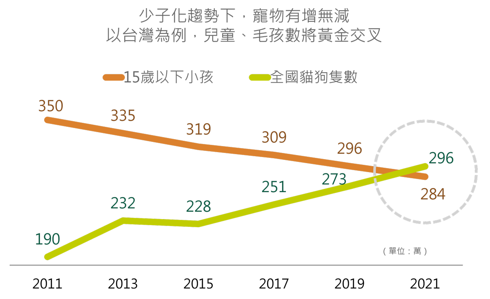

》循環性毛孩經濟，帶來寵萌大商機
現今生活在都市的人們，都會面臨程度不一的空巢、空忙、空洞，容易讓人產生緊張、孤單、焦慮感，而疲憊的心靈需要尋求慰藉，窩心的毛小孩填補了這個重要精神需求。因此越來越多人養寵物，全球數量隨之激增，據統計，全球主要經濟體美、中與歐洲，到2024年時，預估寵物數量將達6.46億，若組成一個國家，數量僅次於中印！除了量的增加，質也提升不少，從食用品、健康醫療到保險，一生所需琳瑯滿目，且通通不能馬虎，帶動寵物產業規模穩定擴大。
從美國、日本到台灣，都出現一個共同現象，毛小孩逐漸取代小孩。以日本為例，早在2003年，因高齡、少子化，加上生活型態轉變，貓狗數量就超過孩童，台灣則在今年下半年形成黃金交叉，預估明年數量將達296萬隻、比孩童多出12萬。因此有不少網友戲稱，等兒、等女、等另一半，不如養狗、養貓來作伴。
等兒等女等另一半 ‧ 不如養狗養貓來作伴
資料來源：時勢公司，2018/12，2018-2021 為研究預估值
由於毛小孩數量不斷增加，受寵程度與日上升，寵物產業邁向擴張之路，食、用品龍頭企業也紛紛將其納入重要產品鏈即可看出，寵物市場的商機夠大！如全球最大的食品飲料商瑞士雀巢Nestlé，在2001年收購擁有108年歷史的寵物食品專業品牌普瑞納(Purina)，躍升為全球第二大寵物食品商；日本衛生用品大廠Unicharm優妮嬌聯，將毛孩納入其產品的使用對象，成為寵物用品的領導品牌。
毛小孩已被人類當成自己孩子般珍視，對其照護走向「全人化」、用品「精緻化」，且伴隨寵物高齡化，保健品、健檢、保險等服務也應運而生。那要如何掌握這麼新潮的寵萌機會呢？這當然要找趨勢的投資專家百揚投資，其領先推出全球Pet毛小孩基金，投資主軸涵蓋毛小孩一生所需，包括食用品、疫苗與藥品、醫療照護與保險、零售銷售平台，帶領您一同搶進幸福陪伴的新經濟。
* 本資料提及之企業、指數或投資標的，僅為舉例說明之用，不代表任何投資之推薦，亦不代表本公司系列基金日後之必然持股。